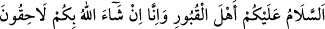

bağışladı” cümlesinde olduğu gibi, bir şeyin kesinlikle gerçekleştiğini haber vermek
için de kullanılabilir.
Aynü’l-Meânî’de şöyle denilir: Kişinin îmânını ikrar ederken “inşaallah” demesi câiz
değildir. Çünkü bu ikrar, kişinin îmân bakımından içinde bulunduğu hâli haber
vermesidir ki bu durumda “inşaallah” demesi bir şüpheyi çağrıştırdığı için muhaldir.
Hz. Peygamber (s.a.)’in mezarlığa girdiği zaman şöyle buyurduğu rivayet edilir:
__WORD__
“Ey kabir ehli selam olsun size. Biz de inşallah size dâhil olacağız.”[142]
Vefat edip âhirete giden kimselere bir gün kavuşulacağı kesin bir gerçek olmasına
rağmen Hz. Peygamber (s.a.), teberrüken “inşaallah” ifadesini kullanmıştır. Rasûlullah
(s.a.)’in “Son nefesimizi îmanla vererek size kavuşacağız” anlamında böyle söylediği
de söylenmiştir.
Peygamber Efendimiz (s.a.)’in kabirdekilere kavuşmayı Allah’ın dilemesine
bağlaması, bu kavuşmanın muhataplar içerisinde hususî bir gruba yani mü’minlere
olmasına binâendir. Âyetteki “__WORD__ =eğer” edatının şart kabul edilmesi takdirinde
“inşaallah” istisnası Mekke’ye girmeyi ifade için değil, Mekke’ye emniyet içerisinde
girmeyi ifade için kullanılmıştır. Çünkü Mekke’ye girilmesi kesin bir husustur. Ancak
girerken emniyet içerisinde olunacağı kesin değildir.
Âlimlerden birisine göre buradaki “in=eğer”, şart değil “O câriyeler iffetli olmayı
istedikleri zaman..” (Nûr, 24/33) âyetinde olduğu gibi zaman bildiren “__WORD__ =zaman” edatı
anlamında kullanılmıştır. Bu konuda İbn Atıyye şöyle der: Bu, mânâya uygunluk
bakımından güzel bir îzahtır. Ancak Arap dilinde “__WORD__ =eğer” edatı “__WORD__ =zaman” anlamında
kullanılmamaktadır.
Âyetteki “inşâallah” ifadesiyle ilgili şöyle bir îzah da vardır: Bu söz Hz. Peygamber
(s.a.)’e, rüyasında kendisine gelen meleğin söylediği sözdür. Şöyle ki, âyetin “mutlaka
gireceksiniz” ile başlayan kısmı, rüyanın tefsiridir. Sanki âyette, meleğin Rasûlullah
(s.a.)’e rüyasında söylediği bu söz nakledilmektedir. Dolayısıyla bunu meleğin
teberrüken söylediği bir söz olarak kabul ettiğimiz takdirde herhangi bir problem
kalmamaktadır.
Ayrıca âyetin bu kısmının Hz. Peygamber (s.a.)’in ashâbına söylediği söz cümlesinden
olduğu da düşünülebilir. Buna göre Peygamber Efendimiz (s.a.), vahye dayalı olarak
gördüğü bu rüyayı ashâbına naklederken şöyle demiş olmaktadır: “Mutlaka Mekke’ye
gireceksiniz…”
Cümlenin devamındaki “düşman saldırılarından emîn bir şekilde saçlarınızın
tamamını tıraş etmiş olduğunuz hâlde gireceksiniz” demektir. Âyetin bu kısmı, ashâba
hitâben: “Bazılarınız saçını kazıtmış, diğerleri de bir kısmını kestirmiş hâlde..”
demektir. Yoksa cümle, zâhir mânâsı ile anlaşılacak olsa sahâbenin her biri, aynı